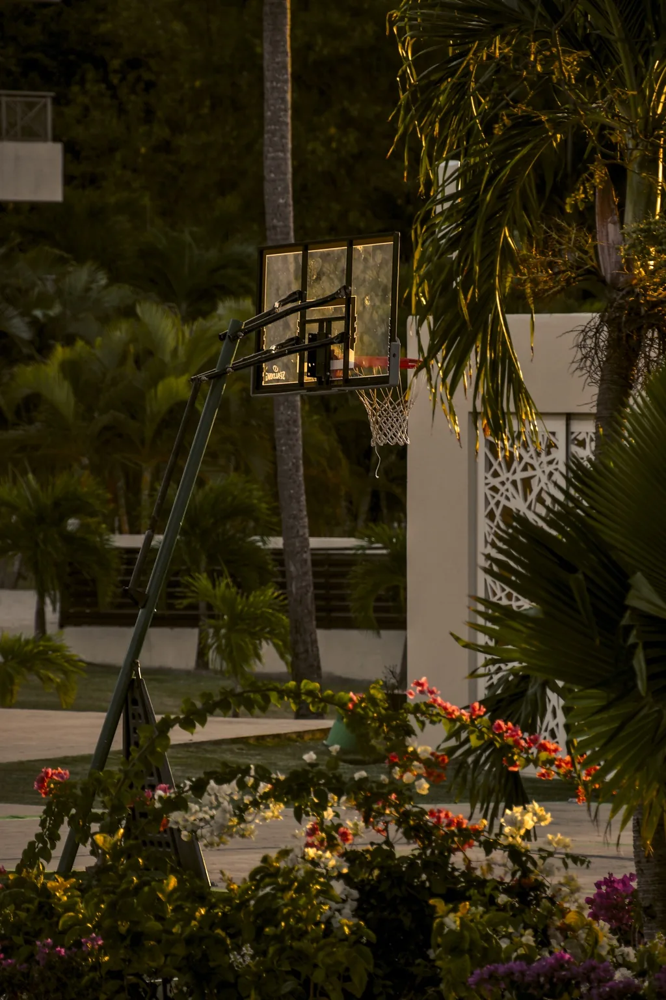

Good hospitality is felt.It should be understood, too.
A property can offer something rare and still struggle to communicate why it matters. EXIF connects the lived experience with the story, signals and creative decisions that help the right guests see its value.
EXIF®
Three connected responsibilities
One considered direction.
The work follows the property—not a fixed package. We begin where the clearest opportunity is and build the right scope from there.
01 / OBSERVELook beyond the obvious.
01 Understand
Research & representation assessment
See the property as a guest might: what stands out, what is overlooked, and where the experience and its presentation do—or do not—meet.
Property and market context
Guest perception and current communication
Priorities before investing in production
02 Define
Positioning & creative direction
Decide what the property should be known for—and make every narrative and visual choice support that idea. The promise must belong to the place, and match the experience it can deliver.
Positioning and narrative
Creative briefs and visual direction
Message and image hierarchy

02 / DECIDEFind the detail that changes the story.03 / CREATEMake the direction tangible.
03 Bring it to life
Creative production & implementation
Turn the direction into clear briefs, useful materials and coordinated work across the channels that shape discovery and arrival. EXIF leads the creative process and brings in specialist collaborators when needed.
Photography and content direction
Brand and digital materials
Production coordination and review
The examples above describe possible areas of work, not a fixed package. Every proposal defines the scope, deliverables, responsibilities and fee for that property.
EXIF / 03Begin with a conversation
Your place hasits own logic.
Let's find the clearest way to express it. A complimentary 30-minute discovery conversation helps us understand your property and decide what kind of work makes sense.